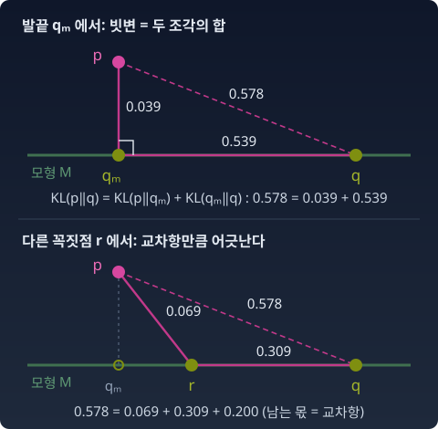

수렴
설문지의 몇 칸이 비어 있거나, 점마다 어느 무리에서 왔는지 적혀 있지 않은 데이터는 흔하다. 이런 데이터로 모형을 맞출 때 오래 써 온 방법은 두 일을 번갈아 하는 것이다. 지금의 모형으로 빈칸을 그럴듯하게 채우고, 채운 데이터로 모형을 다시 맞춘다. 그리고 또 채우고, 또 맞춘다. 이 번갈아 하기가 EM(기댓값 계산과 최대화를 번갈아 하는 알고리즘)이다.
번갈아 하기를 몇백 번 되풀이하다 보면 물음이 생긴다. 이 되풀이는 어딘가에서 멈추는가? 멈춘다면 왜, 그리고 무엇이 멈추는가? 정보기하학의 말로 바꾸면 이렇다. e-사영(e는 exponential. 곱셈의 길을 따라 모형 위로 내려찍기)과 m-사영(m은 mixture. 덧셈의 길을 따라 내려찍기)을 번갈아 하면 어디에 닿는가?
답의 앞부분은 단순하다. 두 일이 같은 목적함수 하나를 변수 하나씩 번갈아 줄이므로, 어느 일도 값을 올리지 않는다. 기하학이 하는 일은 한 걸음이 값을 “얼마나” 내렸는지를 정확히 재는 것이다. 그 자가 사영의 피타고라스 정리다.
이 장은 그 자를 다시 꺼내 손질하고, 그 자로 EM을 재어 본 뒤, 무엇이 수렴하고 무엇이 수렴하지 않는지를 가른다.
피타고라스 정리: KL이 직각으로 나뉠 때
EM의 한 걸음이 목적함수를 얼마나 줄였는지 재려면, KL 발산(한 분포를 다른 분포로 대신할 때 치르는 손해)을 "가장 가까운 점까지"와 "그 점에서 다른 점까지"로 쪼갤 수 있어야 한다. KL은 대칭도 아니고 삼각부등식도 깨지는데, 가장 가까운 점으로 내려찍은 자리에서만은 직각삼각형처럼 두 조각으로 나뉜다. 이 절은 그 정리를 짧게 다시 적고, 이 장에 새로 필요한 것 하나를 더한다. 발끝이 아닌 꼭짓점에서는 무엇이 남는가.
정리 다시 적기
현실 p가 있고, 모형들의 모임 M이 있다. M은 지수족이라고 하자. 지수족은 log q = θ·t(x) − F(θ) 꼴로 쓰이는 분포 모임이고, 자연모수 θ는 t(x) 앞에 곱하는 모수(분포를 정하는 숫자), t(x)는 충분통계량(모형이 데이터에서 보는 요약값), F는 합이 1이 되게 맞추는 로그정규화자다. 지수족은 자연모수로 보면 곧은 면이라 e-평탄하다고 한다. M 위에서 KL(p‖q)가 가장 작은 점을 p의 m-사영점 qm이라 부른다. 지수족에서는 충분통계량의 평균을 p와 맞춘 점이다(모멘트 일치). 산꼭대기 p에서 들판 M으로 수직으로 내려선 발끝이 qm이고, 꼭대기에서 들판 위 아무 마을 q까지의 KL은 두 구간의 KL을 더한 것과 같다. 아래 그림의 위쪽이 그 모습이다.

식으로는 이렇다. M 위의 모든 q에 대해 정확히 성립한다.
빗변은 p에서 q까지. 한 변은 p에서 발끝 qm까지. 다른 변은 발끝에서 M 위를 따라 q까지. 오른쪽 둘째 항은 0 이상이므로, 이 식은 "qm이 M 위에서 p와 가장 가깝다"는 것과 "다른 q는 정확히 KL(qm‖q)만큼 더 멀다"는 것을 한꺼번에 말한다. 빗변과 첫째 항은 p가 KL의 앞 칸에 있고, 둘째 항은 qm이 앞 칸에 있다.
"직각"은 p에서 qm으로 내려오는 m-측지선(덧셈의 규칙으로 가장 곧게 가는 길)이 M과 이루는 각이고, 피셔 계량(곳마다 작은 걸음의 길이와 각도를 재는 규칙)으로 잰다. 심플렉스(결과가 셋인 분포를 점으로 찍는 삼각형) 그림 위에서 눈으로 재면 90°가 아니다.
짝도 있다. m-평탄한 모임(혼합으로 닫힌 모임) 위에서 KL(·‖p)가 가장 작은 점, 곧 e-사영점 qe에서는 두 칸의 자리가 뒤집힌 피타고라스 KL(r‖p) = KL(r‖qe) + KL(qe‖p)가 그 모임 위의 모든 r에 대해 성립한다. EM에서 빈칸을 채우는 단계가 이 짝을 쓴다.
직각이 아니면 무엇이 남는가
발끝이 아닌 점 r을 꼭짓점으로 잡으면 위 등식이 어긋난다. 그림의 아래쪽에서는 KL(p‖q)가 두 조각의 합보다 0.2 크다. 어긋나는 양에는 정확한 식이 있다. 지수족 안의 KL은 브레그만 발산(볼록함수와, 한 점에서 그은 접선 사이의 높이 차이)이고, 브레그만 발산에는 세 점 사이의 항등식이 있다. 1차 근사의 오차 같은 것이 아니라, 항 하나 빼지 않은 등식이다.
마지막 항이 "교차항"이다. 유클리드의 c² = a² + b² − 2ab cos C 에서 코사인 항에 해당한다. 한쪽은 θ 좌표의 차이이고, 다른 쪽은 η 좌표의 차이다. η는 충분통계량의 평균 E[t(x)]로 분포를 가리키는 기대모수이고, θ와 η는 서로의 쌍대 좌표(한쪽이 정해지면 다른 쪽이 정해지는 짝)다. 이 짝지음으로 잰 곱이 0이 되는 것이 "쌍대 직교"이고, 피셔 계량으로 잰 직교와 같은 말이다. 교차항이 사라지는 꼭짓점에서만 피타고라스가 된다.
"거리도 아닌 것"인 KL이 피타고라스 정리를 품고 있었다. 거리가 아니어서 쓸모없는 줄 알았는데, 볼록함수 F(θ)(로그정규화자)에서 태어난 발산이기 때문에 오히려 이 분해가 가능하다. 볼록함수의 그릇과 그 접선이 여기서 삼각형이 된다.
불러오는 중…
파이썬
결과가 셋인 분포 위에, 곡선 하나로 된 e-평탄 모형 qθ(i) ∝ exp(θ·t(i)), t = (0, 1, 2)를 놓는다. p와 M 위의 두 점 r, q를 아무렇게나 뽑아 세 점 항등식을 확인하고, 그림의 예에서 어긋남과 교차항을 나란히 놓는다. 여기서 η는 t의 평균이다.
import numpy as np
t = np.array([0.0, 1.0, 2.0]) # 충분통계량 t(i)
def q_of(theta): # M 위의 점: q_θ(i) ∝ exp(θ·t(i))
w = np.exp(theta * t)
return w / w.sum()
def kl(a, b):
return np.sum(a * np.log(a / b))
def cross(p, th_r, th_q): # 교차항 (θ_q − θ_r)·(η_p − η_r), η = t 의 평균
return (th_q - th_r) * (p @ t - q_of(th_r) @ t)
rng = np.random.default_rng(1)
worst = 0.0
for _ in range(1000):
p = rng.dirichlet([1, 1, 1]) # 아무 현실 p
th_r, th_q = rng.normal(0, 2, 2) # M 위의 아무 두 점 r, q
r, q = q_of(th_r), q_of(th_q)
worst = max(worst, abs(kl(p, q) - (kl(p, r) + kl(r, q) - cross(p, th_r, th_q))))
print(f"세 점 1000쌍, 항등식 잔차의 최댓값 {worst:.1e}")
p, r, q = np.array([0.5, 0.2, 0.3]), q_of(0.0), q_of(1.0) # r = 균등분포
print(f"KL(p‖q) {kl(p, q):.4f} KL(p‖r) + KL(r‖q) {kl(p, r) + kl(r, q):.4f}")
print(f"어긋남 {kl(p, q) - kl(p, r) - kl(r, q):+.4f} −교차항 {-cross(p, 0.0, 1.0):+.4f}")
# 세 점 1000쌍, 항등식 잔차의 최댓값 3.9e-15
# KL(p‖q) 0.5780 KL(p‖r) + KL(r‖q) 0.3780
# 어긋남 +0.2000 −교차항 +0.2000
잔차는 부동소수점의 바닥에 붙어 있다. 근사가 아니라 등식이다. 그림의 예에서 KL(p‖q)가 두 조각의 합보다 0.2000 큰 몫은 교차항에 −를 붙인 값과 같다.
수확
“사영점에서 KL은 두 조각으로 정확히 나뉜다. 발끝이 아닌 꼭짓점에서는 θ의 차이와 η의 차이를 곱한 교차항만큼 어긋난다. 직각은 그 곱이 0이 되는 자리다.”
문제 1. 꺾인 길의 직선거리
학교에서 편의점까지 곧게 300 m를 걸은 뒤, 편의점에서 왼쪽으로 방향을 틀어 집까지 곧게 400 m를 걸었다. (가) 직각으로 틀었다면 학교에서 집까지의 직선거리는 얼마인가? (나) 진행 방향을 60°만 틀었다면 직선거리는 얼마이고, 그 제곱은 300² + 400²과 얼마나 다른가? (다) 진행 방향을 120° 틀었다면?
함께 풀기

(가)는 500 m요. (나)는 코사인 법칙 c² = a² + b² − 2ab cos C 에 C = 60°를 넣었어요. 90,000 + 160,000 − 120,000 = 130,000이니까 360.6 m요.

300 m와 400 m를 걸었는데 학교에서 360 m밖에 안 떨어졌으면, 꽤 많이 되돌아온 셈이에요. 방향을 60°만 틀었는데 그럴까요?

어… 거의 똑바로 간 셈인데 700 m 가까이 떨어져 있어야 할 것 같아요. 숫자가 거꾸로 나왔어요.

코사인 법칙의 C는 꼭짓점에서 두 변이 이루는 사이각이야. 편의점에서 진행 방향을 60° 틀면 두 변 사이의 각은 180° − 60° = 120°고, cos 120° = −0.5라서 120,000을 더해. 370,000, 608.3 m.
(다)는 반대로 사이각이 60°라서 120,000을 빼고, 360.6 m예요. 민준이가 (나)에서 낸 답이 사실 (다)의 답이었네요.
300² + 400²과의 차이 ±120,000은 무엇이 정하나요?

꼭짓점인 편의점에서 두 변이 이루는 각이요. 직각이면 0, 둔각이면 더해지고, 예각이면 빠져요. 어느 점이 꼭짓점인지, 거기서 무슨 각을 재는지를 먼저 정해야 해요.
조별 보고서에서 "꺾인 각"을 방향을 튼 각으로 적었는지 사이각으로 적었는지 안 밝혀서, 조원끼리 숫자가 다르게 나왔던 거랑 같네요.
문제 2. 발끝이 아닌 꼭짓점
결과가 셋인 분포 위에 모형 M = {qθ(i) ∝ exp(θ·t(i)) : t = (0, 1, 2)}가 있고, 현실은 p = (0.2, 0.2, 0.6)이다. (가) 꼭짓점 r = qθ=0(균등분포), q = qθ=1로 두고 KL(p‖q)와 KL(p‖r) + KL(r‖q)를 비교하라. 차이는 교차항으로 설명되는가? (나) 꼭짓점 r을 M 위 어디에 두면 어떤 q를 골라도 교차항이 0이 되는가? 그 r로 (가)의 q에 대해 등식을 확인하라. 위젯의 「문제 2 불러오기」는 이 p와 q를 놓는다.
함께 풀기
(가) 좌변은 0.0573이고, 오른쪽은 0.1483 + 0.3090 = 0.4573이에요. 빗변이 두 변의 합보다 0.4나 짧아요. KL이 삼각부등식을 안 지키는 건 알지만 이렇게 크게 어긋나요? 제 kl 함수가 이상한가 봐요.
함수는 그대로 두고, 0.4가 무엇과 같은지부터 봐요. 교차항의 재료가 뭐였죠?
θ의 차이와 η의 차이요. θq − θr = 1이고, ηp = 0.2·0 + 0.2·1 + 0.6·2 = 1.4예요. q는 (0.090, 0.245, 0.665)니까 ηq = 1.575, 차이는 −0.175. 곱하면 −0.175인데… 0.4랑 안 맞아요.
η의 차이는 어느 두 점 사이에서 재요? 식에서 꼭짓점이 어디였죠?

꼭짓점은 r이에요. q가 아니라 r의 η를 빼야 해요. 균등분포라 ηr = 1, 차이 0.4, 교차항 1 × 0.4 = 0.4. 식은 교차항을 빼니까 0.4573 − 0.4 = 0.0573. 맞아요.
아까 꺾인 길이랑 같네요. 편의점 자리가 r이고, 거기서 재야 하는 걸 다른 점에서 쟀던 거예요. 0.4를 빼는 쪽이니까 길로 치면 예각으로 꺾인 경우고요.
그럼 (나)로 가요. 어떤 q를 골라도 교차항이 0이려면요?
q를 바꾸면 θq − θr은 마음대로 바뀌니까, 남은 쪽 ηp − ηr이 0이어야 해요. t의 평균을 p와 같은 1.4로 맞춘 r, 곧 m-사영점이에요.

이분법으로 찾으니까 θ = 0.640, r = (0.154, 0.292, 0.554)예요. KL(p‖r) = 0.0245, KL(r‖q) = 0.0329, 합이 0.0573이고 잔차는 −6.2e-17이에요. 이번엔 컴퓨터 탓을 해도 되겠네요.
잔차의 크기가 단서예요. 1e-16이면 컴퓨터, 0.4면 식이에요.
직각을 그림에서 찾을 게 아니라, η의 차이가 0이 되는 꼭짓점을 찾으면 되는 거였네요. 수업에서 내적이 0인 걸로 직교를 정의하던 것과 같아요.